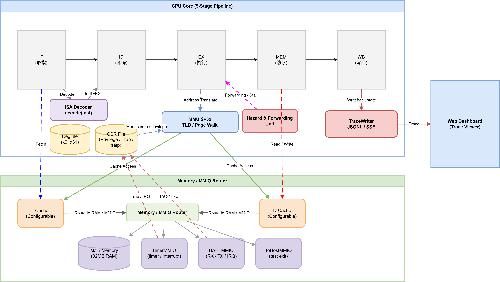
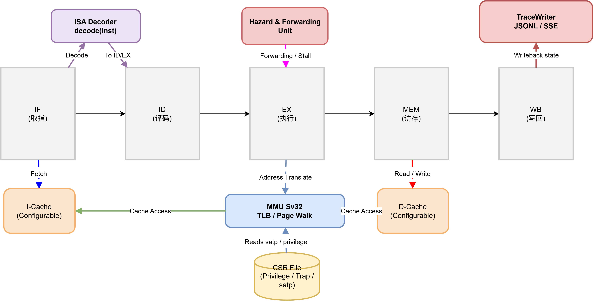
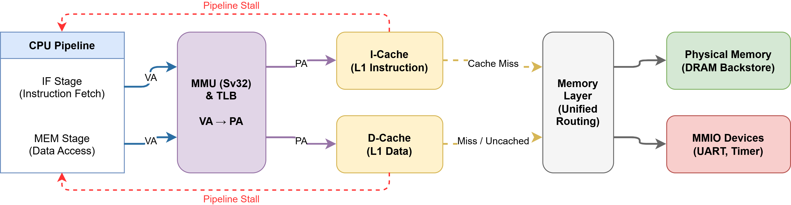
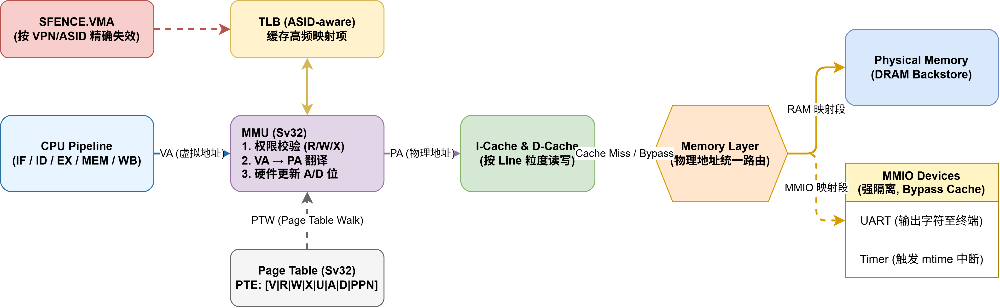
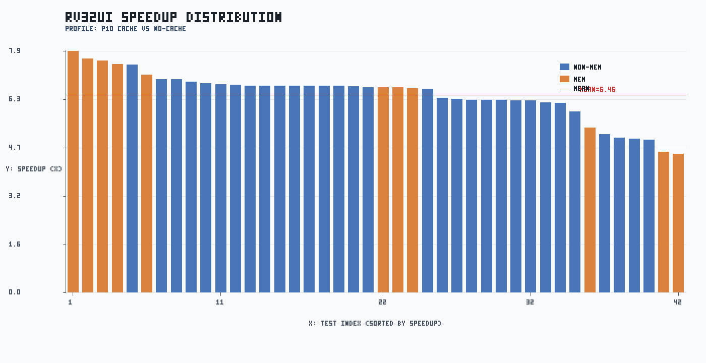
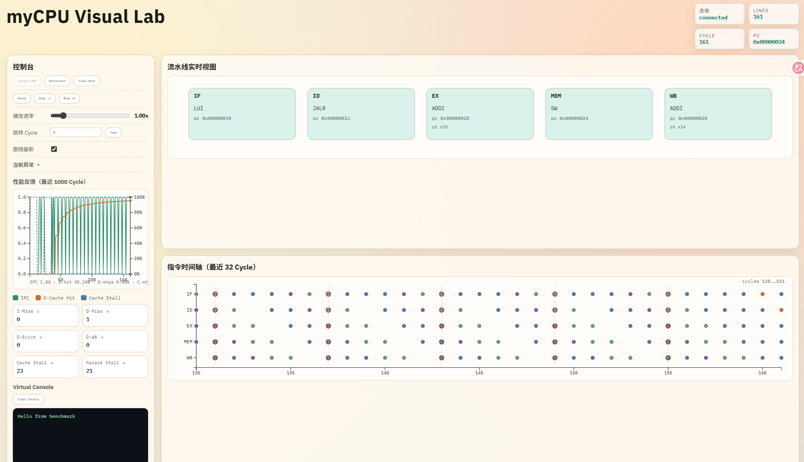
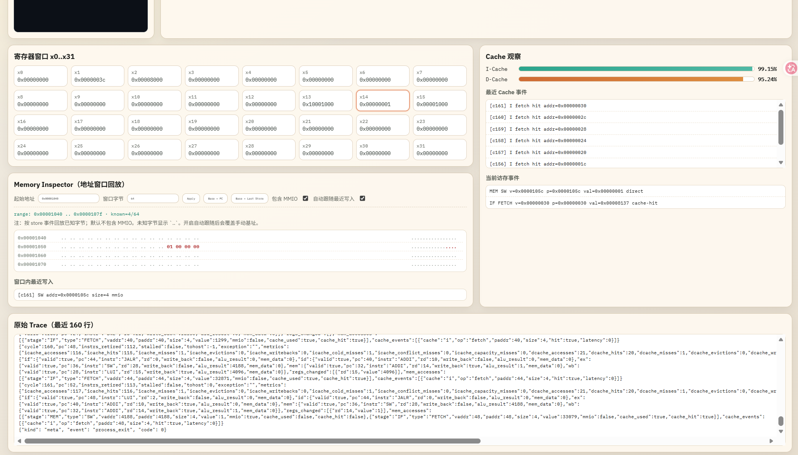

2026年5月6日
本项目已完成一台可独立运行的 RV32I 模拟器 myCPU。
技术栈：基于 C++17 + CMake 的 RV32I 五级流水模拟器，配套 Bash 自动化脚本与 Python 数据处理/门禁脚本，使用 RISC‑V 工具链生成 ELF，产出 CSV/JSON/PNG 报表，并通过 SSE/JSONL + HTML/JavaScript（含 D3）提供 Web 可视化与演示。
| 课程要求 | 当前状态 | 结论 |
|---|---|---|
| 产出可独立运行的 myCPU 模拟器 | 已完成 | 可执行文件 mycpu 已支持加载 ELF 并运行 |
| 五级流水线 | 已完成 | IF/ID/EX/MEM/WB 全链路实现，含前递与冒险处理 |
| I/D Cache | 已完成 | I-cache 与 D-cache 分离，可配置组相联、写策略、miss penalty |
| 30-40 条基础指令 | 已完成 | 实现 49 条可识别指令（不含 UNKNOWN/SYSTEM 占位） |
| 内存与地址空间模拟 | 已完成（基础） | 物理内存 + MMIO 映射 + 越界检查 + 异常上报 |
| MMU/分页机制（基础版） | 已完成（基础） | Sv32 两级页表 + TLB + SFENCE.VMA |
| 中断与异常模块 | 已完成（课程可用） | ECALL/MRET/SRET、trap delegation、timer/uart interrupt |
| 外设接口（UART、定时器） | 已完成 | UART MMIO、Timer MMIO、TOHOST semihosting 已接入 |
| 统一硬件接口规范 | 已完成（基础） | 统一 Device 接口与 map_device 机制 |
| 完整技术报告 | 已完成 | 已有全量测试与性能报告产物 |
| 可视化 | 已完成 | Web可视化，HTML + D3 的前端实现，用于展示 myCPU trace |
| 在模拟器上运行 miniOS/Linux | 未完成（下阶段可选） | 当前具备最小内核实验条件，但尚无完整 OS 镜像 |


五级顺序流水：IF → ID → EX → MEM → WB；异常与分支通过流水线冲刷与重定向处理。
数据冒险：实现寄存器转发（Forwarding），在 load-use 场景插入 1 周期停顿以保证语义正确性。
控制冒险与异常：分支冲刷 + trap/中断委托（ECALL/MRET/SRET），CSR 文件用于特权与 trap 管理。
ISA 覆盖：实现 49 条有效指令（RV32I 子集 + CSR 指令）。
| 类别 | 条数 | 指令 |
|---|---|---|
| R型算术 | 10 | ADD, SUB, SLL, SLT, SLTU, XOR, SRL, SRA, OR, AND |
| I型算术 | 9 | ADDI, SLLI, SLTI, SLTIU, XORI, SRLI, SRAI, ORI, ANDI |
| Load | 5 | LB, LH, LW, LBU, LHU |
| Store | 3 | SB, SH, SW |
| Branch | 6 | BEQ, BNE, BLT, BGE, BLTU, BGEU |
| U型 | 2 | LUI, AUIPC |
| JAL | 1 | JAL |
| JALR | 1 | JALR |
| CSR/特权 | 10 | ECALL, MRET, SRET, SFENCE.VMA, CSRRW, CSRRS, CSRRC, CSRRWI, CSRRSI, CSRRCI |
| Fence | 2 | FENCE, FENCE.I |
可观测指标（用于回归与定位）：cycles、instrs、stall、cache_stall、hazard_stall。

| 参数名 | 含义 | 默认值与说明 |
|---|---|---|
cache_size |
总容量 | 16 KB (16384 Bytes) |
line_size |
缓存行大小 | 默认 64 Bytes |
associativity |
相联度 | 默认 4 路组相联（结构体初始化默认为 1，即 direct-mapped） |
miss_latency |
缺失延迟 | 10（用于模拟 Cache 未命中时的内存访问周期） |

配置对比：对比 p1、p10 与 no-cache 三组环境。采集相关数据并计算相关系数与分解。
三组配置含义
| 配置名 | cache 状态 | miss penalty | 含义 |
|---|---|---|---|
| p1 | 开启 | 1 | 低 miss 代价组，用于观察理想 cache 效果 |
| p10 | 开启 | 10 | 高 miss 代价组，用于观察 miss 对性能放大效应 |
| no-cache | 关闭 | 10 | 无 cache 基线；访存直接走内存路径 |
相关参数
speedup_p10 = cycles_nocache / cycles_p10。值越大表示 cache 收益越高。speedup_p1 = cycles_nocache / cycles_p1。用于评估低 penalty 下收益上限。penalty_ratio = cycles_p10 / cycles_p1。用于评估 workload 对 miss penalty 敏感度。corr(D-hit, speedup) 与 corr(I-hit, speedup) 用于衡量命中率与收益关系。策略矩阵：对比 5 种Cache策略组合（wb_wa / wb_nowa / wt_wa / wt_nowa / nocache）。
自动化链路：
ctest: 20/20 通过，失败 0。
rv32ui p1: 42/42 通过。
rv32ui p10: 42/42 通过。
rv32ui no-cache: 42/42 通过。
benchmark 返回码：
| benchmark | rc_p1 | rc_p10 | rc_nocache |
|---|---|---|---|
| hello | 0 | 0 | 0 |
| matmul | 0 | 0 | 0 |
| quicksort_stress | 0 | 0 | 0 |
gate status: PASS (baseline: wb_wa)
gate issues: 0
web smoke
结论：全部通过正确性验证。
../FULL_TEST_PERFORMANCE_REPORT.mdSpeedup：平均加速 6.46x，最高可达7.88x
延迟掩盖：p10/p1 平均 cycle 比：1.54×，表明在平均场景下 cache 对高内存延迟有明显掩盖作用。
访存密集型用例加速比 (6.57x) 显著高于非访存型 (6.41x)。符合预期。

平均 stall 拆分（算术平均）：stall / cache_stall / hazard_stall = 5.19 / 315.14 / 5.19
Miss分解：I-miss 以 Cold Miss 为主（约 87%）；D-miss 以 Conflict Miss 为主（约 85%），与 rv32ui 官方测试（许多短小、独立的微测试）的固有特性相关。
策略选优：wb_wa (写回+写分配) 凭借对局部性的精准捕捉，在 D-Hit 普遍偏低 (18-19%) 的环境下，依然获得了最低的执行周期 (696.88)
| policy | pass/tests | avg_cycles | avg_i_hit | avg_d_hit | speedup_vs_nocache |
|---|---|---|---|---|---|
| wb_wa | 42/42 | 696.88 | 93.50 | 19.41 | 6.4705 |
| wb_nowa | 42/42 | 698.88 | 93.50 | 18.34 | 6.4553 |
| wt_wa | 42/42 | 698.88 | 93.50 | 18.34 | 6.4553 |
| wt_nowa | 42/42 | 698.88 | 93.50 | 18.34 | 6.4553 |
| nocache | 42/42 | 4633.83 | 0.00 | 0.00 | 1.0000 |
| benchmark | cycles_p1 | cycles_p10 | cycles_nocache | speedup_p10 | speedup_p1 |
|---|---|---|---|---|---|
| hello | 143 | 161 | 1518 | 9.43x | 10.62x |
| matmul | 277570 | 277966 | 3151861 | 11.34x | 11.36x |
| quicksort_stress | 1971272 | 1972901 | 25074548 | 12.71x | 12.72x |
| benchmark | penalty_ratio | i_hit_p10 | d_hit_p10 | stall_p10 | checksum_p10 |
|---|---|---|---|---|---|
| hello | 1.13x | 99.15% | 95.24% | 21 | - |
| matmul | 1.00x | 99.98% | 99.50% | 165 | - |
| quicksort_stress | 1.00x | 100.00% | 99.86% | 56 | e48d8e25 |
| policy | pass/benchmarks | avg_cycles | avg_i_hit_pct | avg_d_hit_pct | avg_speedup |
|---|---|---|---|---|---|
| wb_wa | 3/3 | 750342.67 | 99.71 | 98.20 | 11.1590 |
| wb_nowa | 3/3 | 751638.67 | 99.71 | 93.95 | 11.1440 |
| wt_wa | 3/3 | 751638.67 | 99.71 | 93.95 | 11.1440 |
| wt_nowa | 3/3 | 751638.67 | 99.71 | 93.95 | 11.1440 |
| nocache | 3/3 | 9409309.00 | 0.00 | 0.00 | 1.0000 |
cache性能良好， 在 rv32ui 提供 6.46x 平均加速，在 matmul 与 quicksort 分别达到 11.34x 和 12.71x；benchmark cache matrix 显示 wb_wa 在当前样本下综合最优并已纳入门禁。


面板展示内容
运行 先启动 trace server：
cd /home/ys/camycpu
./tools/run_trace_demo.sh
# 可选：指定 ELF 与最大周期数
./tools/run_trace_demo.sh benchmarks/hello.elf 200
# 可选：固定端口，避免自动回退
TRACE_PORT=8080 ./tools/run_trace_demo.sh benchmarks/hello.elf 200
脚本会打印最终访问地址；如果 8080 被占用会自动回退到其他端口（例如 18080/18081）。
然后浏览器访问脚本打印的 URL，例如：
http://localhost:8080
【时间】2026年5月6日